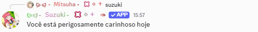
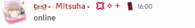
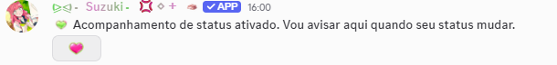
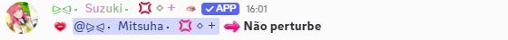
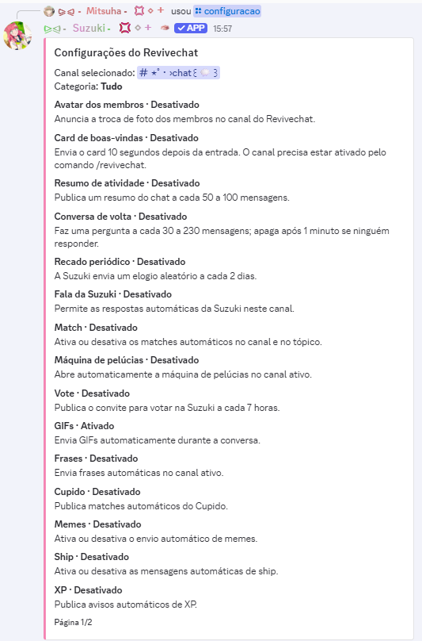
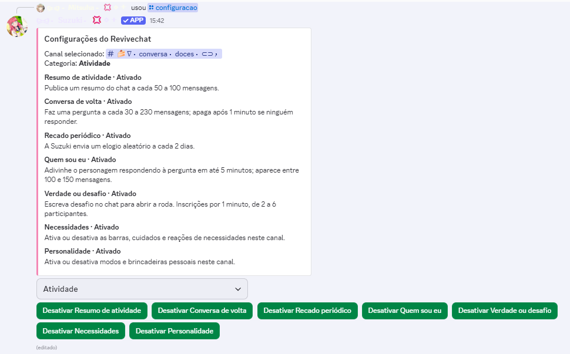

Miyu Suzuki
Demonstrações para revisão de intenções privilegiadas do Discord.
Recortes de capturas reais fornecidas pela responsável. O conteúdo das mensagens, os horários e os resultados não foram recriados ou alterados.
Conteúdo de mensagens
Chamada escrita pelo nome, sem menção ao aplicativo, seguida da resposta real da Suzuki. A chamada original aparece citada no cabeçalho da resposta.

Chamada pelo nome e resposta.Presença
Ativação do acompanhamento pessoal e uma mudança real de estado para Não perturbe. Os três recortes abaixo são trechos separados; não representam uma captura contínua.

1. Solicitação de acompanhamento com a palavra online.
2. Confirmação da ativação e botão de acesso ao painel pessoal.
3. Atualização real de presença.Controles administrativos — evidência de apoio
Os painéis mostram o canal escolhido e os controles por recurso. Eles não demonstram, por si só, um evento de entrada ou de atualização de membro.

Visão geral das opções, incluindo Avatar dos membros e Card de boas-vindas. Cada estado exibido corresponde ao momento da captura.
Categoria Atividade e controles administrativos.Política de privacidade · Site da Suzuki
Estas demonstrações não indicam aprovação do Discord nem certificam conformidade de armazenamento ou segurança.